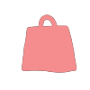
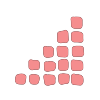
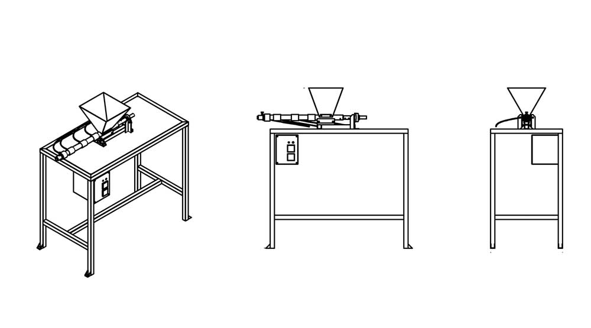
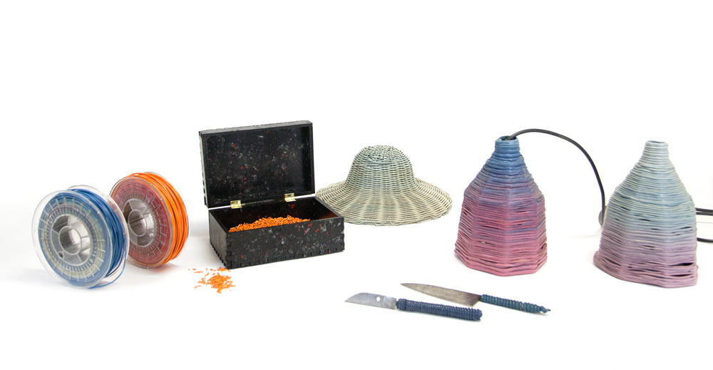

Extrusion machine
Extrusion is a continuous process where plastic flakes are inserted into the hopper and extruded into a line of plastic. The extrusion machine runs continuously so, technically, if you have enough plastic and a well-streamlined process you could be recycling 24/7. With the extrusion machine you can create filament, granulate or get creative working with moulds. This machine is also great for educational purposes as the process is very straightforward and easy to understand. This technique nicely blends differently coloured plastics together and outputs an homogeneous and smooth colour.
Pro tip: Make a stand for your mould to stabilize it and make your life easier.
Download kit
Video Chapters
00:00
Introduction
00:46
Hopper
02:22
Barrel
04:48
Nozzle
07:05
Barrel holder
08:44
Framework
10:43
Electronics
15:03
How it works
Machine Specs
~ 10 days

~ 20 kg
~ 250€

Hard
Technical drawings
You can find all the technical drawings to build this machine in our download-kit. They are divided into different steps and contain all the dimensions you need to build the machine.

3D overview
Below you can find a 3D visual of the machine, just to give you a basic understanding how it works, click the button to turn it around. Detailed CAD drawings can be found in the download-kit.
Creations
The extrusion machine has quite a unique output, a line of recycled plastic. This is well suited to make new granulate or 3D printer filament. However, you can use your creativity and find other applications- change the nozzle for different shapes and sizes, turn it around a mould to make lamps or a handle for a knife.

Built by the community
We are always amazed to see what our community can come up with. Below is a small selection of extrusion machines built by people in our community following Precious Plastic drawings. Truly incredible!
Have you finished building yours?
It's time to share back!